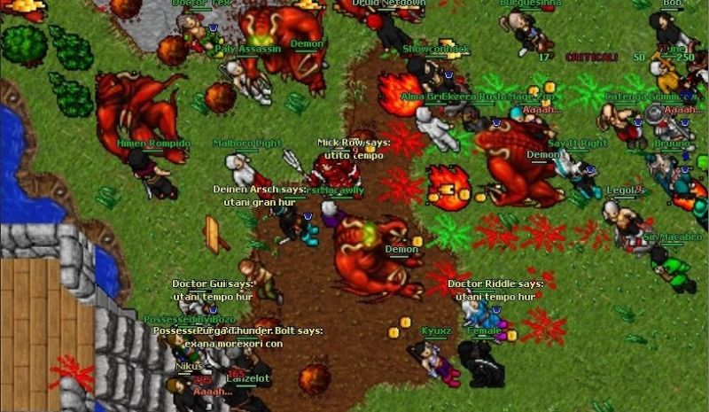

Tibia é um jogo eletrônico de RPG multijogador (MMORPG) gratuito, desenvolvido pela CipSoft. Criado em 1997, é um dos jogos mais antigos do gênero. Nele, os jogadores podem desenvolver as habilidades de seus personagens, buscar tesouros, resolver enigmas e explorar áreas como cidades, masmorras, florestas, desertos, ilhas, praias, minas, etc Os personagens podem disputar lutas entre si ou com criaturas tais como monstros, dragões, demônios, orcs, utilizando armas e magias, enquanto os NPCs não podem ser atacados.

Ao iniciar o jogo, o seu avatar começa na ilha de Dawnport, uma ilha onde todo jogador deve
permanecer até desenvolver habilidades necessárias para o progresso e sobrevivência nos outros mapas
do jogo. Quando o jogador atinge o nível 8, ele pode, opcionalmente, escolher a sua vocação e deixar
a ilha. Em Dawnport, o jogador familiariza-se com o jogo e aprende muitas coisas sobre o mundo de Tibia,
como magia ou usar flechas e espadas.
O jogo foi desenvolvido utilizando a linguagem de programação C++ em ambas versões de Windows
e GNU/Linux.